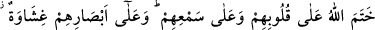
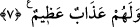
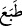

tutkusuyla örtülü, nefslerinin hevâsına tâbi’ olmaları sebebiyle iyice kilitlidir. Nitekim
Allah Teâlâ buyurur: “Bunlar Kur’ân’ı düşünmezler mi? Yoksa kalbleri kilitli
midir?” (Muhammed, 47/24) Bunlar kuds bahçelerinden, üns kokusu koklayamazlar.
Onların üzerine ancak şakâvet ve bedbahtlık rüzgârı eser ve kalblerindeki kilit üzerine
bir de mühür vurulur. Nitekim Allah Teâlâ âyetin devamında onların kalblerini
mühürlediğini belirtmektedir. et-Te’vîlâtü’n-Necmiyye’den yapılan nakil burada sona
erdi.
İncil’de şöyle bir darb-ı mesel vardır: “Sizin kalbleriniz çakıl taşı gibidir, onu ne ateş
pişirebilir, ne su yumuşatabilir, ne de rüzgâr uçurup hareket ettirebilir.” Sa’dî der ki:
Demirin veya mâdenin cevherinde kabiliyet varsa
Ustanın ustalığının eseri (terbiyesi) onda görülür.
Kabiliyeti olmayan demiri parlatmaya,
Hiçbir ustanın gücü yetmez, çünkü onda yetenek yoktur.
7. Allah onların kalblerini ve kulaklarını mühürlemiştir. Onların gözlerine de bir
çeşit perde gerilmiştir ve onlar için (dünyâ ve âhırette) büyük bir azâb vardır.
Allah Teâlâ, önce kâfirleri sıfatları ve hâlleriyle anlatmış, ardından onların cezâsını
da buna ilâve etmiştir. Bu âyet, daha önce geçen “onlar inanmazlar” hükmünün
sebebini göstermektedir. Kalblerinde bulunan mührün gereği, inanmadıklarını
açıklamaktadır.
“Hatm”; yâni mühür vurmak, bir şeyi gizlemek demektir. Bir şeyin saklanırken
mühürlenerek sağlam bir şekilde güvence altına alınması bu kelime ile
isimlendirilmiştir. Bir şeyi mühürlemek hem onu gizleme, hem de işin sonuna gelme
anlamı ifâde eder. Nitekim Kur’ân’ın hatmedilmesi baştan okuyarak sonuna varılması
demektir. Aslında mühür ta’bîri de mecâzîdir. Bununla kasdedilen anlam, insanın
nefsindeki küfür ve isyânı sevmeye, îmân ve tâattan hoşlanmamaya yatkın bir duygunun
bulunmasıdır. Bu da azgınlık, taklîde devam, doğru düşünceden yüzçevirme gibi
sebeblerle olur. Çünkü bu davranışlar, onların kalblerinde uyarıları tesirsiz, Hakk’ı
kabûlü neredeyse imkânsız kılar. Bu durumda olanlara teşbîh ve istiâre yoluyla
“mühürlü” denir.
Bu hâl bâzan da “
” fiili ile ifâde edilir. Nitekim şöyle buyrulmuştur: “İşte onlar,
Allah’ın kalblerini mühürlemiş olduğu kendi heveslerine uyan kimselerdir.”
(Muhammed, 47/16) Aynı mânânın “
” kelimesi ile ifâde edildiği de olur. Nitekim
şu âyette bu kelime kullanılmıştır: “Kalbini bizi zikretmekten gâfil kıldığımız